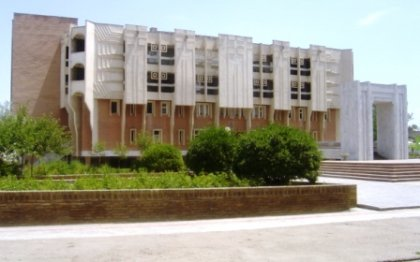
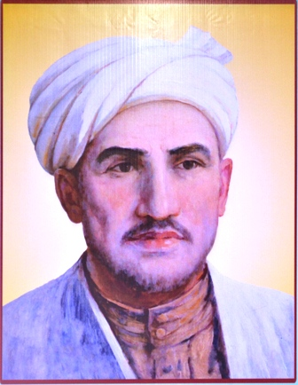

 Китобхонаи вилоятии оммавии ба номи Тошхоҷа Асирӣ яке аз бонуфузтарин марказҳои хизматрасонии фарҳангӣ дар миқёси вилоят ва аз лиҳози таърихи таъсисёбӣ кӯҳантарин китобхона дар кишвар ба шумор меравад. Ибтидои таърихи таъсисёбии Китобхонаи вилоятии оммавии ба номи Тошхоҷа Асирӣ ба санаи 12 -уми марти соли 1917 рост меояд. Дар ин рӯз ҳамоиши панҷуми депутатҳои Гарнизони ҳарбии аскарони шӯравӣ дар Хуҷанд баргузор шуд, ки дар қисми чаҳорум ва панҷуми қарори ҳамоиш таъсис додани китобхона матраҳ шуда буд. Аз ҷумла дар қарори суратҷаласаи мазкур омадааст: «Дар бораи масъалаи таъсис додани китобхонаи гарнизонӣ чунин тадбирҳо андешида шаванд: ташкил кардани комиссия, интихоби аъзо аз депутатҳои Гарнизони ҳарбӣ барои муайян кардани ҷойи китобхона ва сомон додани дигар корҳо. Барои анҷом додани тадбирҳои мазкур 4 депутати зерин: Горемикин, Равин, Пиглов ва Вайберг интихоб карда шуданд». Хазинаи китобхонаи навтаъсис худи ҳамон моҳ бо рӯзномаву маҷалла ва китобчаҳои мазмунан сиёсӣ пур шуд. Шумораи аввалини рӯзномаи «Известия» ба дасти хонандагон-аскарон расид. Баъди як моҳ аз китобхонаи шаҳри Тошкент 150 китобҳои дигар оварданд. Адабиёти китобхонаи навбунёд аз Москва ва Петроград дастрас мегардид. Он солҳо ҳам мисли имрӯз муаллифон асарҳои худро ба китобхона ҳадя мекарданд. Китобхона дар Хонаи Озодӣ ҷойгир шуда, мудири нахустини он Червинский буд. Соли 1919, чи тавре аз маърузаи мудири маорифи шаҳри Хуҷанд А. Раҳимбоев бармеояд, аз 1 январ то 1 август (1919) барои ба махзани китобхона ворид кардани китобҳо 33560 рубл ва барои дастуру раҳнамоҳо 27 447 рубл маблағ сарф гардидааст. Бино бар навиштаи Корманди шоистаи фарҳанги Тоҷикистон Н.Морозов ва профессор А.Дун соли 1924 китобхона аллакай шаҳрӣ шуда, дар маркази шаҳр, назди клуби 1-уми май ҷойгир мешавад. Соли 1927 дар ҷашни 10-солагӣ китобхона ҳамчун китобхонаи марказӣ ва дастурдеҳ бо китобхонаҳои ноҳияҳои Хуҷанд, Нов, Ашт, Конибодом ва Исфара ҳамкорӣ мекард. Соли 1935 Шӯрои шаҳри Хуҷанд барои вусъат бахшидани корҳои китобдориву китобшиносӣ корҳои зиёдеро анҷом дод. Дар натиҷа бинои китобхонаи марказии шаҳрӣ калонтар гардид ва аввалин толори хониш барои хонандагон кушода шуд. Дар солҳои Ҷанги Бузурги Ватанӣ ҳам китобхона бо ҳайати ниҳоят ками корӣ аз фаъолият намонд. Китобдорон ба аскарону афсарони дар госпиталҳои ҳарбии шаҳр буда, китоб мекашонданд.  Соли 1947 китобхонаи шаҳрӣ ба китобхонаи вилоятӣ табдил меёбад. Дар соли 1947 ҳайати кории китобхона иборат аз мудири китобхона А.И.Чекунина, саркитобдор З.И.Баум, китобдорон Р.М. Берг, И.М.Вязников, А.П.Базуева, муҳосиб И.М.Қодиров, посбон Е.Ботурова, фаррош А.Палина буданд. altСоли 1949 китобхонаро ба бинои нав, ки дар кӯчаи Орҷоникидзе, бинои 122 воқеъ буд, кӯчониданд. Соли 1959 махзани китобии китобхонаи вилоятӣ ба 123 ҳазор нусхаро ташкил медод. Мутахассисони маҳаллӣ дар китобхона пас аз соли 1960 ба фаъолият шуруъ карданд. Соли 1961 мудири китобхонаи вилоятӣ А. Маҳкамов, мудири шуъба О. Додохоҷаева ва М. Умарова, О Неъматова ва дигарон китобдор шуда кор мекарданд. Дар ҷашни 70-солагии таъсисёбӣ ба хазинаи китобхонаи вилоятӣ 13 ҳазор нусха китоб, 416 номгӯ рӯзномаву маҷалла ворид гардид, ки аз он зиёда аз 10 ҳазор хонандагон истифода бурданд. Дар давоми солҳои 1960-1990 сарварии китобхонаро А.Маҳкамов, С.Абдуллоева, М.Мирсаидова, Н.Шукурова, И.Ҳусайнова, Х.Аббосов ва А.Пулотов бар уҳда доштанд. Аз соли 1990 то 1994 фаъолияти китобхона ба талошу саъйи Корманди шоистаи фарҳанги Тоҷикистон Ш.Осимова, собиқадорон М.Умарова, Г.Чернова, М.Шарипова, М.Абдуллоҷонова, М.Боқиева, Т.Азизова ва дигарон вобаста буд. Соли 1994 китобхона бино бар сабаби зиёд шудани теъдоди китобдорон бори дигар дараҷаи вилоятиро ба даст овард. Ба ҳайати кории китобхона шомил шудани Нависандаи халқии Тоҷикистон Муҳиддин Хоҷазод, нависандаву рӯзноманигор Аҳмадҷони Хистеварзӣ, таърихшинос Эҳсон Оқилов, адабиётшиносон Нуралӣ Нуров, Баҳром Мирсаидов, Тайиба Бобоева саҳифаҳои таърихи нави китобхонаи вилоятӣ боз шуд. Сарварии китобхонаро солҳои 1995-2002 Нодирҷон Солиҷонов, солҳои 2002-2014 Алиҷон Бобоев, солҳои 2014-2015 Мунаввара Дамонова, солҳои 2015-2016 Абдуғаффор Маллаев, ки чеҳраҳои шинохтаи соҳаҳои маданияту илм ва Аълочиёни фарҳанги кишвар мебошанд, роҳбарӣ намуданд. Санаи 22-юми августи соли 2016 номзади илмҳои филологӣ, дотсент, Аълочиёни фарҳанг, маориф ва илми Тоҷикистон Мирсаидов Баҳром сарвари китобхона таъин гардид. *** Китобхона чаҳорошёна буда, таҳхонаҳои калон барои нигаҳдории китобҳо дорад. Дар ошёнаи якуми он шуъбаи техникӣ ва кишоварзию шуъбаи нигаҳдории китобҳо ҷойгир шуданд. Шуъбаҳои хизматрасонӣ, маълумотдиҳӣ-библиографӣ, табъу нашр, дастхатҳо ва нашрияҳои нодир, китобхона-филилали №7, толори маҷлис, шуъбаи илмӣ-методӣ ва кабинетҳои кории маъмурини китобхона воқеъ гардидаанд. Дар ошёнаи сеюм бошад шуъбаҳои электронӣ, толори хониш, адабиёти хориҷӣ, феҳрастҳо, санъат, адабиёти бачагона (китобхона-филиали №8) мавқеъ доранд. Ду шуъба-матбуоти даврӣ ва адабиёти тиббӣ дар ошёнаи чаҳорум барои истифодабарандагон хизматрасонӣ мекунад. Гӯшаи Амрико дар шаҳри Хуҷанд низ дар ошёнаи чорум воқеъ шудааст. Ҳар як шуъба вобаста ба самти фаъолияти худ вазифа ва мақсадҳои муайян дорад ва аз рӯи нақшаи кории солона, семоҳа ва моҳона фаъолият мекунад.
Тамом